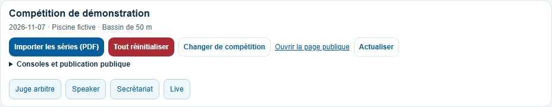
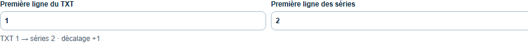
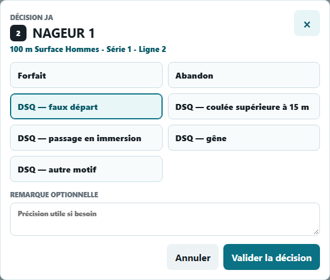
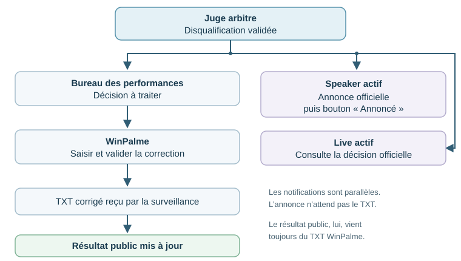
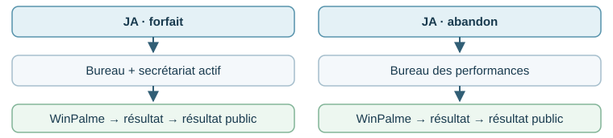
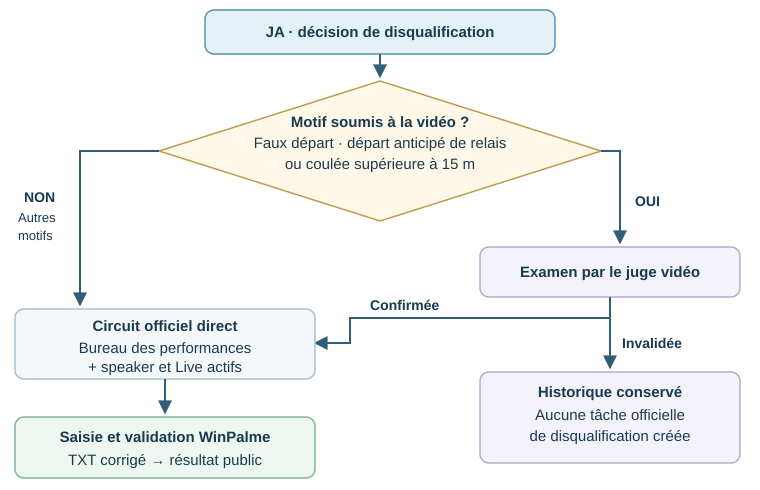

LivePalmes Direct publie les séries et les résultats d’une compétition piscine sur une page accessible au public. WinPalme reste l’outil de saisie et de validation des résultats. Le bureau Direct lit ses PDF de séries et ses fichiers TXT de résultats.
Choisir son fonctionnement
Résultats seuls
Avec consoles terrain
Le bureau des performances seul suffit. Importer les séries puis surveiller les TXT pour alimenter la page publique.
Le bureau et le juge arbitre sont obligatoires. Ajouter le speaker, le secrétariat ou le Live selon les besoins. La vidéo est réservée au national.
Préparer la compétition
Ouvrir le portail TEST sur livepalmes-test.web.app/portail.html, puis « LivePalmes Direct ». Utiliser son compte régional ou national habituel. Si la session est déjà ouverte sur TEST, elle est réutilisée. Un responsable régional retrouve les compétitions de son périmètre ; un autre intervenant peut recevoir une délégation.
Choisir la saison et la compétition du calendrier, puis activer le Direct si nécessaire. Vérifier le nom, les dates et le bassin. Ces informations proviennent du portail : les corriger dans le portail, puis actualiser le bureau.
Cliquer sur « Importer les séries (PDF) ». Choisir le PDF WinPalme, contrôler l’aperçu : courses, sessions, horaires, séries, lignes et relais. Vérifier puis utiliser la publication groupée pour publier tout le lot sélectionné. L’option de publication du PDF complet évite de le déposer une deuxième fois pour le public.
Ouvrir la page publique et contrôler le rendu. Le lien est disponible dans le bureau. Le transmettre aux clubs et au public. Les engagements restent affichés tant que les résultats ne sont pas publiés.

Le bureau regroupe l’import et les accès aux postes. Compétition et données fictives.
LivePalmes Direct · Essai sur TEST · 1 / 5
AU POSTE DU BUREAU DES PERFORMANCES
Surveiller les résultats TXT
Chrome ou Edge, sur l’ordinateur qui accède aux fichiers WinPalme
Dans le bureau, cliquer sur « Choisir le dossier » dans le bloc « Résultats WinPalme · surveillance TXT ». Autoriser l’accès demandé par le navigateur.
Contrôler les associations de courses proposées à partir des noms de fichiers. Aucun préfixe de nom n’est à saisir. Vérifier surtout la session, la course, le sexe et la série.
Vérifier la correspondance des lignes. Exemple : si le TXT commence à 1 et les séries à 2, choisir première ligne TXT 1, première ligne des séries 2. Ainsi TXT 1 correspond à la ligne 2, puis 2 à 3, etc. Le nombre de places en finale est un autre réglage.

Exemple de correspondance 1 → 2, sur des données fictives.
Choisir si les TXT déjà présents doivent être publiés. Cocher « Publier aussi les fichiers déjà présents » pour une reprise ou pour charger des résultats déjà validés. Confirmer que les séries et associations sont correctes et autoriser la publication automatique, puis démarrer.
Laisser ce poste ouvert et éveillé. Valider les séries dans WinPalme comme d’habitude. La surveillance contrôle le dossier toutes les 30 secondes, attend deux lectures identiques du fichier puis publie les résultats nouveaux ou modifiés. Le suivi des imports indique les séries et résultats reçus. Vérifier le dernier contrôle et les éventuelles alertes.
Correction et reprise
Corriger dans WinPalme et valider de nouveau : le TXT modifié remplace le résultat précédent. Après une fermeture du navigateur, rechoisir le dossier, contrôler les réglages de lignes mémorisés et relancer la surveillance.
Si une alerte apparaît
Lire le fichier indiqué. Vérifier d’abord le décalage des lignes, les associations et les séries à jour, puis reprendre le contrôle. Les lignes de remplissage et les doublons strictement identiques sont ignorés ; une ambiguïté réelle doit être corrigée.
LivePalmes Direct · Essai sur TEST · 2 / 5
OPTION AVEC CONSOLES · RÉGIONAL
Coordonner les postes
Les décisions circulent entre les consoles ; les résultats publics viennent des TXT
Dans « Consoles et publication publique », activer les postes utiles puis enregistrer. Dès qu’un autre poste est activé, le juge arbitre est obligatoire. Ouvrir les liens de la compétition. Un même compte peut servir sur plusieurs appareils ; pour un autre compte actif, utiliser « Déléguer cette compétition », choisir ses consoles et sa date d’expiration.
Poste
Action principale
Juge arbitre
Choisit course et série, clique sur la ligne du nageur, choisit le motif et valide. « Pointer ici » pose un repère commun sans déplacer les autres postes.
Bureau des performances
Traite les décisions dans « Arbitrage et finales », les saisit dans WinPalme, confirme leur prise en compte et contrôle l’arrivée du TXT corrigé.
Speaker
Annonce la décision officielle, puis clique sur « Annoncé ». Sans speaker activé, le bureau confirme l’annonce des finalistes.
Secrétariat
Prend en compte les forfaits et saisit les forfaits en finale. Sans ce poste activé, le bureau assure la saisie des forfaits en finale.
Live
Consulte les informations officielles et peut masquer une carte sur son appareil. Ce poste est distinct de la page publique de résultats.
Exemple de décision du juge arbitre
Choisir la course et la série.
Cliquer sur la ligne du nageur.
Choisir le motif. Si demandé, préciser le relayeur ou la longueur ; ajouter une remarque utile.
Valider la décision. Elle est transmise selon le circuit de la page suivante.
La capture montre le vrai écran. « NAGEUR 1 », la compétition et les résultats sont fictifs.

Fenêtre ouverte depuis la ligne du nageur.
Une décision de console ne modifie pas à elle seule le résultat public. Le bureau doit la saisir dans WinPalme et recevoir le TXT corrigé.
LivePalmes Direct · Essai sur TEST · 3 / 5
RÉGIONAL · SANS ARBITRAGE VIDÉO
Circuits des décisions
Notifications des postes et mise à jour des résultats publics
Disqualification
Selon l’épreuve, les motifs proposés sont : faux départ, départ anticipé de relais, coulée supérieure à 15 m, passage en immersion, faute de bouteille, gêne d’un concurrent ou autre motif. En régional, toutes ces disqualifications suivent le circuit ci-dessous.

Les postes actifs reçoivent la décision en parallèle. L’annonce du speaker ne remplace pas la correction du TXT.
Forfait et abandon

Après une annulation ou une réqualification, traiter la correction au bureau, dans WinPalme et dans les annonces concernées. Vérifier le nouveau TXT avant de considérer le résultat public comme corrigé.
LivePalmes Direct · Essai sur TEST · 4 / 5
FINALES ET COMPLÉMENT NATIONAL
Finales et arbitrage vidéo
Configurer les finales avant la fin des séries qualificatives
Si la compétition comporte des finales
Paramétrer au scratch : sans finale, A ou A + B ; 6 ou 8 places par finale. Appliquer par course ou en groupe, puis enregistrer.
Toutes les séries reçues et les décisions traitées : contrôler les qualifiés. Le speaker annonce et confirme ; sans speaker activé, le bureau confirme l’annonce effectuée hors application.
Ex æquo à une limite utile : annoncer les qualifiés certains et signaler le départage. Le JA ou le bureau enregistre l’ordre officiel, sans choisir automatiquement selon le nom ou la ligne.
Forfait après annonce nominative, sous 30 minutes : saisie par le secrétariat, ou par le bureau sans secrétariat activé. Annoncer les repêchages ; les nouveaux qualifiés ont leur propre délai. Le JA ou le bureau confirme l’annulation d’un swim-off devenu inutile.
Les affectations de lignes et la composition des finales restent saisies dans WinPalme. Une modification des résultats ou des séries après annonce demande un nouveau contrôle de la composition.
Au national seulement · si la vidéo est activée
Ce circuit concerne les compétitions nationales avec la console vidéo activée. Sans vidéo activée, reprendre le circuit régional de la page 4.

La reprise explicite par le JA sans attendre la vidéo reste possible. Une annulation du JA ou une réqualification du délégué doit être traitée au bureau et reportée dans WinPalme ; les éventuelles nouvelles annonces restent à confirmer.